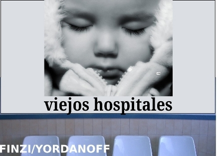
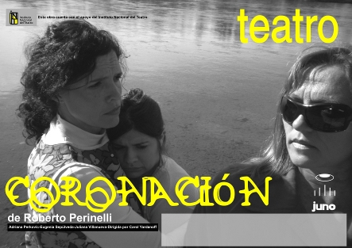

Antoine y Carmelinda
(2014- EN CARTEL) Bajar DOSSIER en PDF
- Autor: Alejandro Finzi
- Dirección: Carol Yordanoff
- Actúan: Claudio Vaucheret, Tamara Frezza, María Luján Urreaga, Jorge Sznek
- Voz en off: Alejandro Finzi
- Asistencia de dirección: María Alejandra Cortez
- Diseño de iluminación: Jesús Hernandez
- Diseño escenográfico: Carol Yordanoff y Julio Sepúlveda
- Asistentes de escena y Operación de sonido: Alejandra Cortez y Julio Sepúlveda
- Operador/a de de luces: Claudia Brito y Jesús Hernandez
- Diseño de vestuario: Carol Yordanoff
- Diseño sonoro: Fernando Barraza y Cecilia Delloro
- Realización escenográfica y dibujos: Julio Sepúlveda
- Realización de vestuario: Ivana Yordanoff y Silvina Bobato
- Realización y asesoramiento de títeres: Silvina Vai
- Producción: María de los Ángeles Olguín
- Diseño gráfico: Juan José Esteve
- Fotos: Mariano Otero
http://www.alternativateatral.com/obra33478-antoine-y-carmelinda
Viejos Hospitales
(2012)
- Autor: Alejandro Finzi
- Dirección: Carol Yordanoff
- Actúan: Andres Flores, Adriana Perkovic, Marianela Tisberger, Fernando Escobar
- Asistencia técnica: Claudio Vaucheret

Amor al aire libre
(2011 - 2012)
- Autor: Carlos Pais
- Dirección: Carol Yordanoff
- Actúan: Claudio Vaucheret, Adriana Perkovic, Marianela Tisberger
- Asistencia técnica: Fernando Escobar

Coronación
(2009 - 2010)
- Autor: Roberto Perinelli
- Dirección: Carol Yordanoff
- Actúan: Adriana Perkovic, Juliana Villanueva, Alejandra Fredes, Eugenia Sepúlveda
- Escenografía: Carlos Nahuel
- Diseño de imagen: Daniel Gallardo
- Asistencia técnica: Claudio Vaucheret
